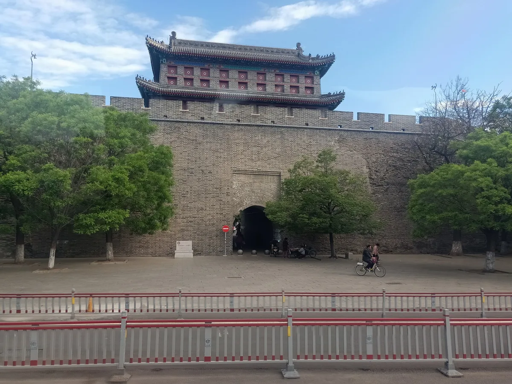
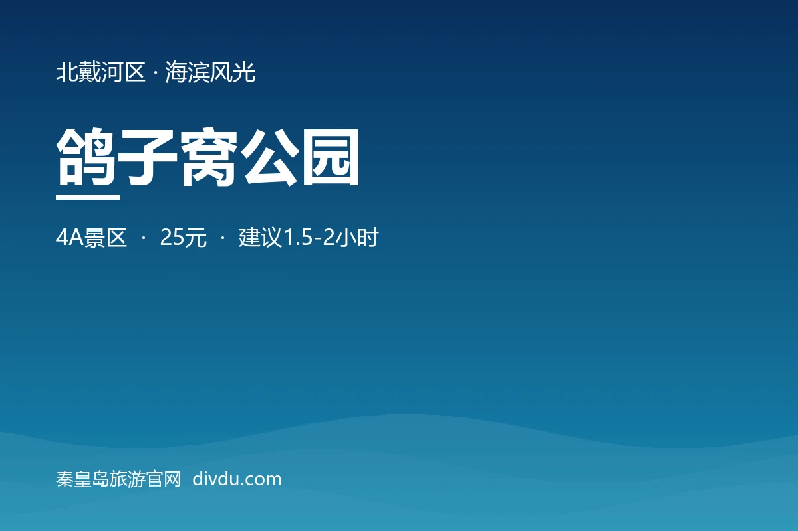
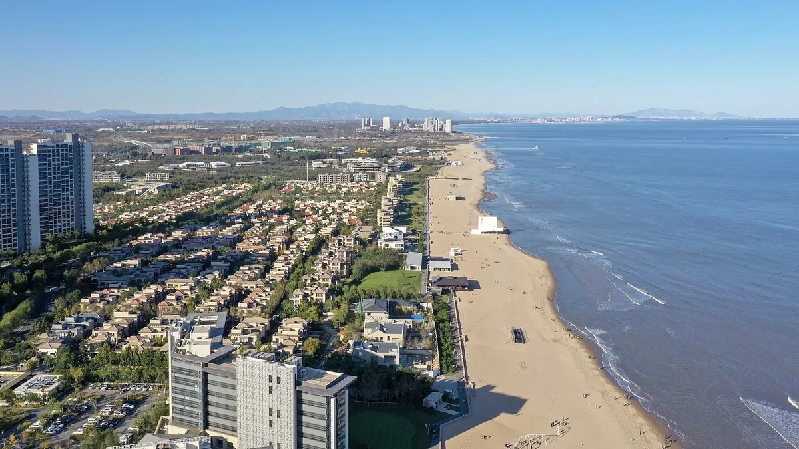

最常用的工具和攻略，一键直达
按当前季节，本地人推荐这些
三个高铁站怎么选，一图看懂
去北戴河、南戴河、阿那亚的首选
市中心主枢纽，去海港区最方便
去山海关古城、老龙头的首选
秦皇岛地处河北省东北部，南临渤海，北依燕山，因秦始皇东巡至此而得名。 这里是连接华北与东北的咽喉要道，也是中国首批沿海开放城市之一。
拥有中国四大避暑胜地之一的北戴河、天下第一关山海关、 长城唯一入海处老龙头等世界级旅游资源，每年吸引数千万游客。




精心设计的经典路线，每天不赶路，玩得尽兴
获取最新攻略、实时天气、本地人推荐、同行拼车

免费获取3日精华行程，景点·美食·交通全覆盖，助你轻松玩转秦皇岛！